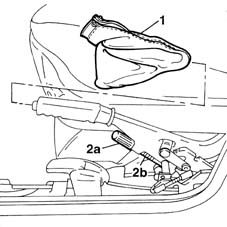

3380A04 handbrake - check travel
- Path
- Procedures > 33 BRAKING SYSTEM > 3380 HANDBRAKE > 3380A handbrake control and linkage > 3380A04 handbrake - check travel
- Kind
- repair procedure (removal / refitting; the operation number is the code)
- Applies to
- all engines; all production periods
- Interactive page
- https://sloeber94.github.io/elrnDB-fMltpl/en/#/2891661
Applies to: all engines; all production periods
The recovery of the clearance due to wear is automatic, the adjustment of the handbrake should only be carried out after having replaced the rear brake shoes, the rear brake cylinder and the complete cable.
Proceed with the adjustment when the vehicle is on the lift.
1. Remove the handbrake lever protective boot.
2. Make a note of the position of the nut, then loosen the adjustment nut (2a) for the handbrake cable by at least two or three turns to ensure that the cable (2b) is completely loosened.

Applies to: all engines; all production periods
Start up the engine.
With the engine idling, press the brake pedal forcefully at least 10 or 15 times.
Retighten the handbrake cable adjustment nut to the original position.
Make sure that, with the handbrake lever in the rest position, the rear wheels can rotate freely.
Check that the braking action of the handbrake starts before the first notch.
At the end of the adjustment, check that the lever does not travel through more than five notches of the toothed sector.
Turn off the engine.
Fit the protective boot on the lever.
Topics that link to this page (21)
- G01 HANDBRAKE NOT EFFICIENT
- 0010K40 40,000km service coupon, emission control versions
- 0010K48 40,000km service for emission control versions with a/c
- 0010K80 80,000km service coupon - emission control versions
- 0010K85 80,000km service for emission control versions with a/c
- 0010M20 120,000km service coupon, emission control versions
- 0010M21 120000 km service coupon for emission control versions with air conditioner
- 0010M60 160,000km service coupon - emission control versions
- 0010M68 160,000km service for emission control versions with a/c
- 3310B34 REAR BRAKE CALIPERS - R.R. - Includes. handbrake adjustment
- 3310B50 rear brake discs r r
- 3310B57 rear calliper bracket - r r
- 3310B59 rear brake disc guard - r r
- 3310B60 rear brake pads - replace - includes handbrake adjustment if necessary
- 3320B20 Rear brake shoe CYLINDER (one) left or right - Replace.
- 3380A10 handbrake lever - r+r
- 3380A30 handbrake cable - r+r
- 3380A38 link/cable connecting handbrake lever to cable - r+r
- 3380A44 handbrake/linkage protection - r+r
- 4420D10 rear suspension axle - r+r includes bleeding
- 4420D20 rear suspension axle -replace- includes r+r, check, parts transfer and bleeding